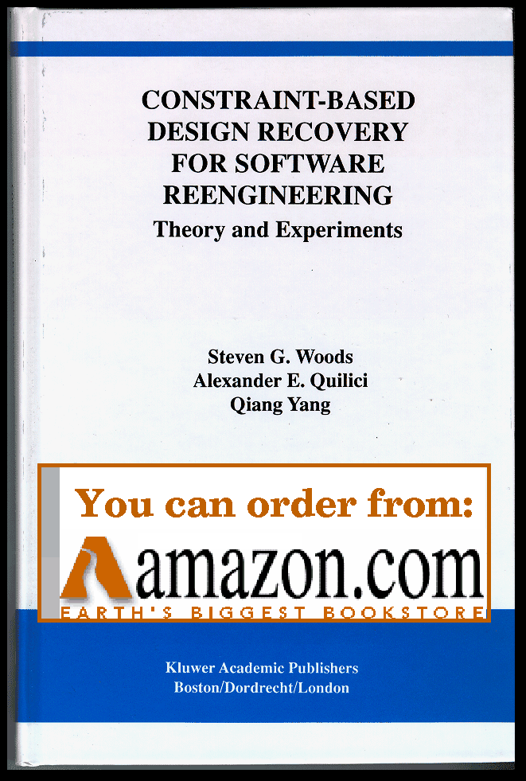
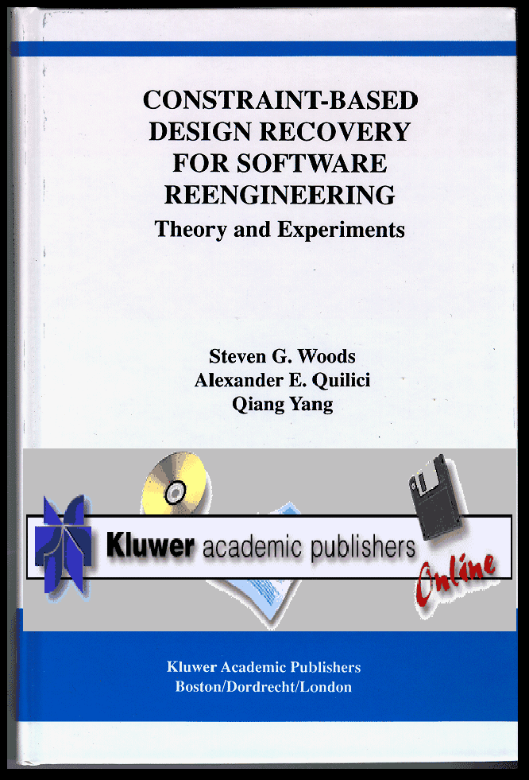

I have been a Post-Doctoral Fellow affiliated with the University of Hawaii at Manoa, Department of Electrical Engineering since September, 1996. In conjunction with this work, I have been recently exploring a collaboration with CSIRO's Division of Information Technology, Software Engineering Initiative based in Canberra, Australia. Even more recently I have been collaborating with the Software Engineering Institute, Reengineering Center of Carnegie Mellon University. More information about these efforts can be found here.
My primary research collaborator and co-author for both Software Reengineering (Program Understanding) and Scenario Generation for Virtual Training is Alex Quilici. As a change of pace, I lectured calss entitled "An Introduction to C" as EE150 at the University of Hawaii. Some of my other duties have included assistance with the supervision of several graduate students.
I have been fortunate enough to collaborate closely with several notable research groups during the past several years, including the Software Engineering Initiative (CMIS, CSIRO, Australia); the Case-Based Reasoning Group based at Simon Fraser University; the National Research Institute for Mathematics and Computer Science in the Netherlands (CWI); the Defence Research Establishment Valcartier, Command and Control Information Systems division.
In 1996 I completed my Ph.D. in Computer Science at the University of Waterloo. At Waterloo I was a long-time member of the Logic Programming and Artificial Intelligence Group (LPAIG), and was affiliated with the Information Technology Research Centre (ITRC) of Canada.
I am primarily interested in issues related to software re/reverse engineering and AI techniques such as constraint satisfaction, plan recognition and planning. Our new book bringing our research up to date is now out!! My past PhD and Masters supervisor was Dr Qiang Yang. I completed my Masters of Mathematics (Computer Science) degree at Waterloo in 1991 with the submission of a thesis entitled "An implementation and evaluation of a hierarchical non-linear planner" (Abtweak). Years ago I did my undergraduate work at the University of Saskatchewan, completing my B.Sc. (Computer Science) degree (Alumni 1987).
I gratefully acknowledge that my research has been partly funded by NSERC - Natural Sciences and Engineering Research Council of Canada.
 Order from Amazon |
 Order from Kluwer |
|---|
| Name | Description |
|---|---|
| Publication Archive | Chronological index for the legacy papers, manuals, presentations, and downloadable publication files formerly stored under Sub. |
| Courses Archive | Index for the archived course materials, including EE150 snapshots, in-progress EE150 materials, and the cognitive modelling discussion papers. |
| Bibliography Archive | Index for the legacy bibliography pages, BibTeX sources, and agent-reading collections. |
| Reserve Archive | Index for backup pages, old tools, form experiments, and historical reserve material kept outside the main snapshot navigation. |
| Research Artifacts Archive | Index for raw research materials, preserved data/code snapshots, and supporting artifacts that are kept separately from the main publication and course archives. |